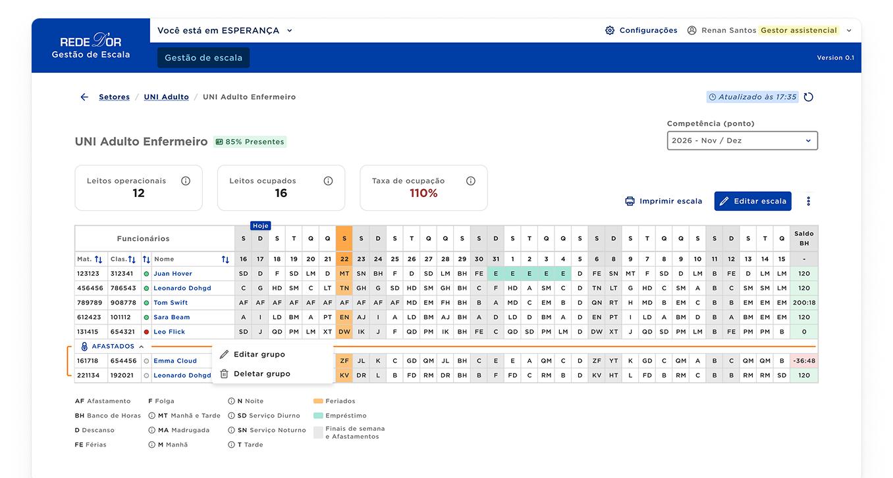
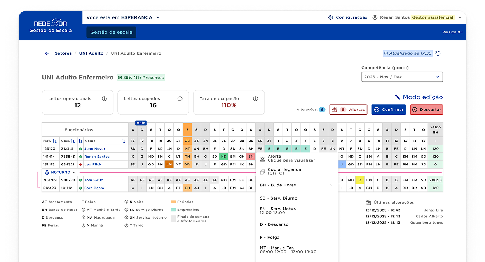
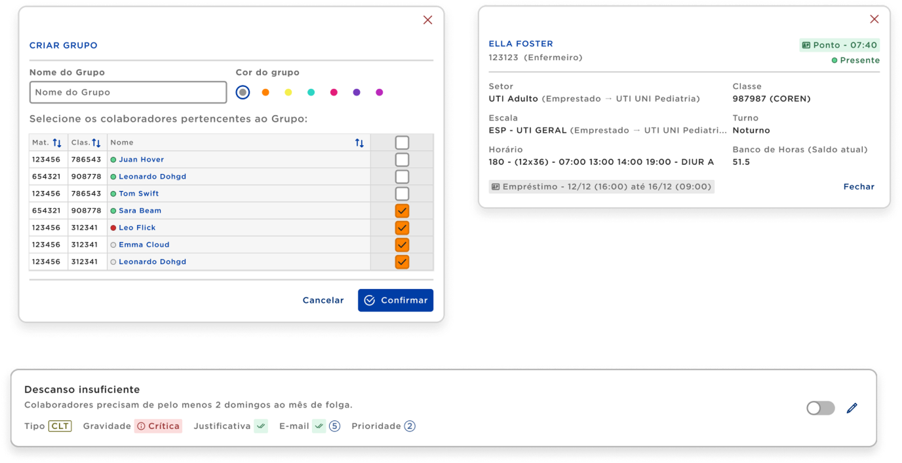

Managing shifts inside Brazil’s biggest hospitals
I’ve conceived and led design for Rede D’Or’s own platform for managing shifts inside their hospitals. Set to be the default for over 80 hospitals in Brazil, ultimately impacting more than 13.500 hospital beds and over 48.800 healthcare professionals.

Role
UX/Product Designer
Duration
1 year
Team
1 Product Manager
1 QA, 3 Devs, 1 Tech lead
HR and Business teams eventual help
Several stakeholders
Problem
I conducted interviews and led research with more than 25 healthcare professionals and stakeholders that showed us that not only the process and dynamics for managing turns inside the company's hospitals are different for each one, but we also became aware of the plethora of variables involved in the simple act of creating the shift for the next week of work inside a sector of a hospital.
Dissecting the legal-heavy environment while being aware of incisive rules, labor unions accords, each hospital particularities like physical questions was a challenging endeavor. Not to mention, the understanding of the exact context on which the users would use the product in order to achieve accessibility standards and fine tune the product to the users needs. Moreover, the technical complexity that creating a centralized platform that would allow managers to edit and become aware of alerts while managing professionals in near real time encompass, while making sure that other parallel and dedicated services and programs are connected in the back-end for financial and security ends, was an interesting experiment for the team.
Solution
The solution was a complete editing-heavy platform that allows managers to create and edit shifts, being notified of alerts regarding available professionals, beds and hours.
Also, the platform would have its other half inside the company's own HR product (RH Digital), which was also under my lead during this time. In this HR platform, the managed shifts and tables would be visible to the nurses and all other related professionals.
The product made its way to the users after the MVP in 3 months, and by the end of my lead it had shown interesting results.
233,33%
Improvements in some KPIs
4.6/5
CSAT score (Manager’s persona)
5k+
Managed professionals monthly
Miscellaneous
The Design System was ready, however I was able to suggest changes that would allow my products more control, working and talking closely to the designers responsible for the DS.

